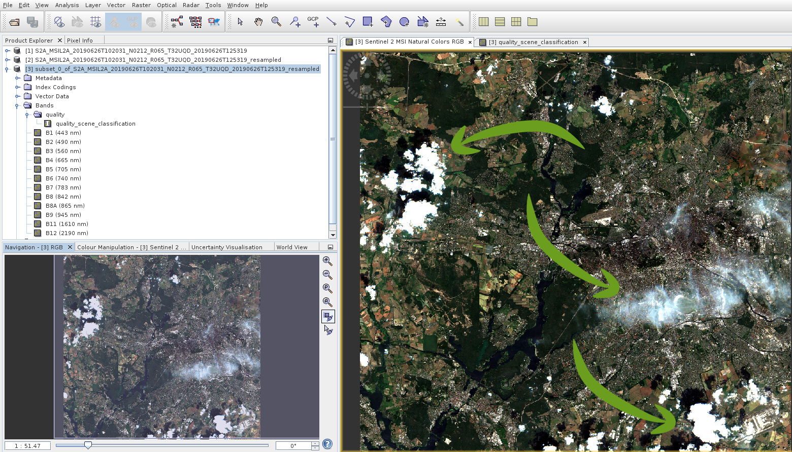

Preprocess Optical Data
Preprocessing optical data in remote sensing (RS) research usually describes the correction of sensor- and platform-specific radiometric and geometric distortions of RS data. Depending on the available data, this can include the following processing steps (not ordered):
- radiometric correction due to variations in scene illumination and viewing geometry
- geometric correcting /orthorectification to improve the positional accuracy of image data
- atmospheric correction to minimoze atmohspheric effects and to improve the spectral comparability between two scenes
- conversion of data into various units (e.g., TOA radiation to reflectance) or between different data types (e.g., .img to .tiff)
- compressing or subsetting data to save disc space
Fortunately, both Landsat 8/9 and Sentinel 2 Level-1 products are already radiometrically and geometrically corrected. If you use Level-2 scenes, the atmosphere correction is already done on both products by the data provider, which is a prerequisite especially for a time series analysis. So there is no need for you to do either of this corrections any more!
We want to focus on converting the just-downloaded products into GeoTIFF files. A GeoTIFF file is a standard used in many GIS and RS software solutions and allows georeferencing information to be embedded within the TIFF-file itself. Such information includes the map projection, the coordinate system, the ellipsoid, the geodetic datum, the geospatial extent, and many more.
Landsat 8 and 9 Preprocessing
Landsat 8 as well as Landsat 9 ship as a tar-archived file with the spectral bands as individual georeferenced tif images. We want to stack these images into a single geotiff-file, i.e., into a so-called raster stack. Afterwards, it is much easier to work with the darta. While this could also be done in QGIS, we will use R for this preprocessing, because it is easier to automate things this way. This results in the following intermediate steps we have to check off:
- unzip your downloaded L8 files
- put together the spectral band files of your choice into a rasterstack
- save this rasterstack to your hard drive
- (optional) delete all redundant data
- (optional) create pyramid layers for a better visualization in QGIS
We will practice everything exemplary on the basis of a single L9 Level-2 data set. There will be an exhaustive explanation for each line of code. Based on that we will develop a script that will automatically do everything for you in the future.
Prerequisite
The following content requires that you have either successfully downloaded some Landsat 8 or 9 scenes as part of the Download Section Exercise, or that you have acquired some datasets from the USGS EarthExplorer by your own. If this is not the case, look into the chapter Download - Earthexplorer!
Done? – Then start R-Studio now!
Preprocess a single dataset
We recommend writing the following code in the script window of R-Studio and executing it from there (see chapter R-Studio).The example below assumes that you have one or more Landsat 8 or 9 scenes in a “landsatdata”-folder.
We will use the terra library to write a raster file later. Additional libraries should always be loaded first, using the function library():
library(terra)
## Loading required package: spA few libraries make use of other libraries. So does the terra library with the sp-package, which will be loaded automatically.
Set the path to your working directory. Please, be aware that the delimiters between subfolders should be either “/” or “\”. Especially, if you working on Windows machines, take care of this. Use the function getwd() to see which directory is set as your working directory.
setwd("P:/ath/to/your/folder")
getwd()Then define the Landsat 9 product of your choice with its entire file path and save it as the string variable product:
product <- "LC09_L2SP_193023_20240512_20240513_02_T1.tar"
file.exists(product)
## [1] TRUENOTE: this is just an example – you have to change the file and its path according to your own settings!
You can use the function file.exists() to check whether the file can be found on your system or not. If it returns FALSE, make sure you did not mess up the file name.
We want to unpack the file into a folder with the same name as the file. The character variable product already contains the full name of the Landsat scene. We just have to get rid of the suffix “.tar”. Therefore we can use the function substr() to delete the last four characters (=“.tar.gz”) of the string:
productname <- substr(product, 1, nchar(product) - 4)
productname
## [1] "LC09_L2SP_193023_20240512_20240513_02_T1"The substring function substr() accepts three arguments here: a string (the entire file path with the suffix), and two integer values – one for a start (“1” = start with the first character) and one for a stop position within the given string. In order to define the stop position, we need to count the number of all characters of the file path via nchar(product) (which is 44 in our case) and substract 4.
Unzip the Landsat product using the untar() method and define the directory to which all data will be extracted by setting the argument exdir = productname:
untar(product, exdir = productname)You should notice a new folder being created next to your initial data product. This could take a short moment. During processing, a red exclamation point can be seen in the upper right corner of the console window. NOTE: If this step fails, your data is corrupt. In this case, you will need to download the file again because something went wrong during data transfer.
After unpacking is complete, we want to have a look in the newly extracted folder and save the file names of all files in this folder into a vector productfiles using the function list.files. By providing the argument full.names = TRUE, the full paths are returned for each file:
productfiles <- list.files(productname, full.names = TRUE)
productfiles
## [1] "LC09_L2SP_193023_20240512_20240513_02_T1/LC09_L2SP_193023_20240512_20240513_02_T1_ANG.txt"
## [2] "LC09_L2SP_193023_20240512_20240513_02_T1/LC09_L2SP_193023_20240512_20240513_02_T1_MTL.txt"
## [3] "LC09_L2SP_193023_20240512_20240513_02_T1/LC09_L2SP_193023_20240512_20240513_02_T1_MTL.xml"
## [4] "LC09_L2SP_193023_20240512_20240513_02_T1/LC09_L2SP_193023_20240512_20240513_02_T1_QA_PIXEL.TIF"
## [5] "LC09_L2SP_193023_20240512_20240513_02_T1/LC09_L2SP_193023_20240512_20240513_02_T1_QA_RADSAT.TIF"
## [6] "LC09_L2SP_193023_20240512_20240513_02_T1/LC09_L2SP_193023_20240512_20240513_02_T1_SR_B1.TIF"
## [7] "LC09_L2SP_193023_20240512_20240513_02_T1/LC09_L2SP_193023_20240512_20240513_02_T1_SR_B2.TIF"
## [8] "LC09_L2SP_193023_20240512_20240513_02_T1/LC09_L2SP_193023_20240512_20240513_02_T1_SR_B3.TIF"
## [9] "LC09_L2SP_193023_20240512_20240513_02_T1/LC09_L2SP_193023_20240512_20240513_02_T1_SR_B4.TIF"
##[10] "LC09_L2SP_193023_20240512_20240513_02_T1/LC09_L2SP_193023_20240512_20240513_02_T1_SR_B5.TIF"
##[11] "LC09_L2SP_193023_20240512_20240513_02_T1/LC09_L2SP_193023_20240512_20240513_02_T1_SR_B6.TIF"
##[12] "LC09_L2SP_193023_20240512_20240513_02_T1/LC09_L2SP_193023_20240512_20240513_02_T1_SR_B7.TIF"
##[13] "LC09_L2SP_193023_20240512_20240513_02_T1/LC09_L2SP_193023_20240512_20240513_02_T1_SR_QA_AEROSOL.TIF"
##[14] "LC09_L2SP_193023_20240512_20240513_02_T1/LC09_L2SP_193023_20240512_20240513_02_T1_ST_ATRAN.TIF"
##[15] "LC09_L2SP_193023_20240512_20240513_02_T1/LC09_L2SP_193023_20240512_20240513_02_T1_ST_B10.TIF"
##[16] "LC09_L2SP_193023_20240512_20240513_02_T1/LC09_L2SP_193023_20240512_20240513_02_T1_ST_CDIST.TIF"
##[17] "LC09_L2SP_193023_20240512_20240513_02_T1/LC09_L2SP_193023_20240512_20240513_02_T1_ST_DRAD.TIF"
##[18] "LC09_L2SP_193023_20240512_20240513_02_T1/LC09_L2SP_193023_20240512_20240513_02_T1_ST_EMIS.TIF"
##[19] "LC09_L2SP_193023_20240512_20240513_02_T1/LC09_L2SP_193023_20240512_20240513_02_T1_ST_EMSD.TIF"
##[20] "LC09_L2SP_193023_20240512_20240513_02_T1/LC09_L2SP_193023_20240512_20240513_02_T1_ST_QA.TIF"
##[21] "LC09_L2SP_193023_20240512_20240513_02_T1/LC09_L2SP_193023_20240512_20240513_02_T1_ST_TRAD.TIF"
##[22] "LC09_L2SP_193023_20240512_20240513_02_T1/LC09_L2SP_193023_20240512_20240513_02_T1_ST_URAD.TIF"These are all 22 files that come with a Level-2 product including bands regarding thermal observations (see Landsat 8 for more information). As a double check, you can have a look at the identical files in your file explorer:
Now we select all the spectral bands that we want to put into our new data stack. Have a deeper look at the files in productfiles. The files are named after the corresponding spectral channels at the end of the file name, e.g., “SR_B1”, “SR_B2”, and so on. We use these terms to extract the bands by utilizing the grep() function. The following code looks a little bloated. Maybe it is. But it gives you the freedom to exclude individual bands that you may not need. NOTE: This is an example of level 2 data. Landsat Level-1 scenes potentially have 11 channels. In the case of Level 1 data, you could easily enter the remaining lines here.
bands <- c(grep('SR_B1', productfiles, value=TRUE),
grep('SR_B2', productfiles, value=TRUE),
grep('SR_B3', productfiles, value=TRUE),
grep('SR_B4', productfiles, value=TRUE),
grep('SR_B5', productfiles, value=TRUE),
grep('SR_B6', productfiles, value=TRUE),
grep('SR_B7', productfiles, value=TRUE)
)
bands
## [1] "LC09_L2SP_193023_20240512_20240513_02_T1/LC09_L2SP_193023_20240512_20240513_02_T1_SR_B1.TIF"
## [2] "LC09_L2SP_193023_20240512_20240513_02_T1/LC09_L2SP_193023_20240512_20240513_02_T1_SR_B2.TIF"
## [3] "LC09_L2SP_193023_20240512_20240513_02_T1/LC09_L2SP_193023_20240512_20240513_02_T1_SR_B3.TIF"
## [4] "LC09_L2SP_193023_20240512_20240513_02_T1/LC09_L2SP_193023_20240512_20240513_02_T1_SR_B4.TIF"
## [5] "LC09_L2SP_193023_20240512_20240513_02_T1/LC09_L2SP_193023_20240512_20240513_02_T1_SR_B5.TIF"
## [6] "LC09_L2SP_193023_20240512_20240513_02_T1/LC09_L2SP_193023_20240512_20240513_02_T1_SR_B6.TIF"
## [7] "LC09_L2SP_193023_20240512_20240513_02_T1/LC09_L2SP_193023_20240512_20240513_02_T1_SR_B7.TIF"The grep() function searches for the string, which is given as the first argument, e.g., ‘SR_B1’, in the vector of strings (2nd argument). Normally, when the function finds a match, it only returns the position of this find in the vector productfiles. By setting the argument value=TRUE we can write out the content of the vector at the respective position instead. By doing so, we create an vector bands containing all file paths via the standard combine-function c().
Now we can create a raster stack based on the vector of bands in the variable bands. In order to do so, we use the function rast(), which is part of the terra-library we loaded in the beginning! This raster stack function creates a raster stack object based on a list of filenames. You will learn more about the beauty of raster stacks in the chapter Visualization.
rasterstack <- rast(bands)We can save this raster stack and store it on your hard drive via writeRaster:
writeRaster(rasterstack,
paste0(productname, ".tif"),
filetype = "GTiff",
overwrite = TRUE
)The writerRaster fuction is a powerful tool, which is also provided by the terra package. In line 1 we set our raster stack object as the first argument. In line 2 we define the output name of the new file we will create. To do this, just add the suffix “.tif” to our filename using the handy function paste0, which just put all the strings together to one string. Line 3 explicitly defines the output format “GTiff”. How should I know this string “GTiff”, you ask? These strings are fixed by the function and are also listed for other data formats in the documentations. The fourth argument in line 4 only gives the authority to overwrite existing files.
DONE! A new file containing all spectral bands is now written directly next to the initial packed file you downloaded!
There are still two useful additional things left to do:
First, we can now delete the folder we created by uncompressing your Landsat data because it is no longer needed. So, if you want to save disk space, use the command unlink() to simply delete the folder. By setting the argument recursive=TRUE, all files within the folder will be deleted:
unlink(productname, recursive=TRUE)Second, it is advisable to create so-called pyramid layers for each Landsat dataset. Pyramid layers are used to improve performance. They are a downsampled version of the original raster and speed up the display of raster data by retrieving only the data at a specified resolution that is required for the display. We can automatically create them by using the Geospatial Data Abstraction Library (GDAL). Initially, GDAL has nothing to do with R, but it can be operated via R using eg. sf and terra sf. Here, we use the function gdal_addo.If you want to use this function, remember to install and load the library sf.
library(sf)
gdal_addo(paste0(productname, ".tif"), overviews = c(2, 4, 8, 16))Run the code and you will create a .ovr-file next to your .tif-file. This ovr-file holds the pyramid information, which will prove useful later in QGIS.
Note: In my case, after using the command gdal_addo() the object rasterstack is not usable anymore. In that case just reopen the save rasterstack file.
Phew! This was A LOT of (explanatory) text by now. Fortunately, the code is actually much shorter! Here is the complete code for preprocessing one exemplary L8 Level-2 collection 2 file:
# Load the 'terra' package for raster data manipulation
library(terra)
# Load the 'sf' package for handling spatial data
library(sf)
# Set the working directory to the specified folder path
setwd("P:/ath/to/your/folder")
# Define the product filename
product <- "LC09_L2SP_193023_20240512_20240513_02_T1.tar"
# Create the product name by removing the file extension (.tar) from the product filename
productname <- substr(product, 1, nchar(product) - 4)
# Extract the contents of the tar file into a directory named after the product name
untar(product, exdir = productname)
# List all files in the product directory with their full paths
productfiles <- list.files(productname, full.names = TRUE)
# Select the specific band files (SR_B1 to SR_B7) from the product files
bands <- c(grep('SR_B1', productfiles, value=TRUE),
grep('SR_B2', productfiles, value=TRUE),
grep('SR_B3', productfiles, value=TRUE),
grep('SR_B4', productfiles, value=TRUE),
grep('SR_B5', productfiles, value=TRUE),
grep('SR_B6', productfiles, value=TRUE),
grep('SR_B7', productfiles, value=TRUE)
)
# Create a raster stack from the selected band files
rasterstack <- stack(bands)
# Write the raster stack to a GeoTIFF file, specifying the file type and allowing overwrite
writeRaster(rasterstack,
paste0(productname, ".tif"),
filetype = "GTiff",
overwrite = TRUE
)
# Remove the product directory and its contents
unlink(productname, recursive=TRUE)
# Generate overviews (pyramids) for the GeoTIFF file to optimize its performance
gdal_addo(paste0(productname, ".tif"), overviews = c(2, 4, 8, 16))Learn how to automate things for many datasets in the next section!
Landsat 8 Bulk Preprocessing
Imagine you have 50 Landsat 8 records. Of course, it would be very tedious to modify and start the script 50 times. That’s why there is now an automated solution for any number of data products!
Again, the prerequisite is that you have the L8 Level-2 datasets downloaded to a folder, in which all of your Landsat 8 scenes are stored – please, no other files! Of course you should replace the file path according to your storage location and create a character variable:
pathToFiles <- "/media/sf_exchange/landsatdata"
dir(pathToFiles)
## [1] "LC081920232017083001T1-SC20180613163601.tar.gz"
## [2] "LC081930232017060201T1-SC20180613160412.tar.gz"You can check the files inside pathToFiles with the dir() function. It should list all your Landsat 8 files. If that is not the case, make sure you did not mess up the file path name.
We can write all the products that exist in the folder in a vector products using the list.files() function:
products <- list.files(pathToFiles, full.names = TRUE)
products
## [1] "/media/sf_exchange/landsatdata/LC081920232017083001T1-SC20180613163601.tar.gz"
## [2] "/media/sf_exchange/landsatdata/LC081930232017060201T1-SC20180613160412.tar.gz"To go through all the steps we saw in the previous section above for each of the scenes in products, we use a for-loop. Conceptually, the for-loop does the following:
for (i in products) {
print(i)
print("do all the preprocessing stuff")
}
## [1] "/media/sf_exchange/landsatdata/LC081920232017083001T1-SC20180613163601.tar.gz"
## [1] "do all the preprocessing stuff"
## [1] "/media/sf_exchange/landsatdata/LC081930232017060201T1-SC20180613160412.tar.gz"
## [1] "do all the preprocessing stuff"For all landsat scenes i in products, it will do all the preprocessing stuff. The variable, or iterator, i is just a placeholder, which is sequentially occupied with the file names of the Landsat products.
Thus, you can just imagine any filename (as a string) every time you see the iterator i.
The remaining steps are then identical to those described above. Here is the complete code. Just adjust your pathToFiles and run it in R-Studio to preprocess all of your Landsat 8 Level-2 files!
library(terra)
pathToFiles <- "./landsatdata"
products <- list.files(pathToFiles, full.names = TRUE)
for (i in products) {
print( paste0("processing: ", i) )
productname <- substr(i, 1, nchar(i) - 7)
untar(i, exdir = productname)
productfiles <- list.files(productname, full.names = TRUE)
bands <- c(grep('band1', productfiles, value=TRUE),
grep('band2', productfiles, value=TRUE),
grep('band3', productfiles, value=TRUE),
grep('band4', productfiles, value=TRUE),
grep('band5', productfiles, value=TRUE),
grep('band6', productfiles, value=TRUE),
grep('band7', productfiles, value=TRUE)
)
writeRaster(stack(bands),
paste0(productname, ".tif"),
format = "GTiff"
)
unlink(productname, recursive=TRUE)
makeOVR <- paste0("gdaladdo -ro ", productname, ".tif 2 4 8 16")
system( makeOVR )
}What does the script for Level-1 data look like? Get an answer and check your knowledge during the following tasks!
Sentinel 2 Preprocessing
Sentinel 2 data is delivered as zip-compressed files in Sentinel’s own SAFE format. The spectral bands are stored as jpg-files in this SAFE container in three different geometric resolutions (10 m, 20 m & 60 m as shown in Section Sentinel 2). We want to stack these jpg-files into a single geotiff-file of an uniform pixelsize of 10 m, i.e., into a so-called raster stack (because it is much easier to work with such a raster stack).
Due to the size of the data, we need to subset the important data from the SAFE container during preprocessing in order to minimize the computational time and the data volume. Otherwise, a single Sentinel 2 image can quickly grow to 8 GB in size! For this, we will use only desktop app SNAP and its commando-line based counterpart, the Graph Processing Tool (GPT). This results in the following intermediate steps:
- resample all bands to 10 m
- spatial and bands subset
- save image as geotiff to hard drive
We want to perform the preprocessing step by step on the basis of an Sentinel 2 Level-1 scene in SNAP. Based on that we will develop a graph file that will process an arbitrary number of scenes for you!
Prerequisite
The following content requires that you have either successfully downloaded some Sentinel 2 scenes as part of the Download Section Exercise, or that you have acquired some datasets from the ESA SciHUB by your own. If this is not the case, look into the chapter Sentinel / SciHUB!
Here you can download Sentinel-2 level 2 data (from 31th of July 2018) for execute this exercise.
Done? – Then start SNAP now!
Preprocess a single dataset
If SNAP is started, you can open the zip file of an image directly by File > Open Product.

Open File SNAP
Use SNAP’s toolbar to navigate to Raster > Geometric Operations and open the Resample operation:
Navigation to Resample
A window will pop up with two tabs. In the first tab, define a downloaded, zipped Sentinel 2 file as the source product. You do NOT need to unzip it in advance! In the example shown below, the file is located in the exchange folder of our VM.

Resampling settings tab 1
Click on the second tab “Resampling Parameters”. Select spectral band 2 here to define the geometric resolution of the final product (band 2 has a resolution of 10 m) and press :
Resampling settings tab 2
This should create a “virtual file” with the suffix “_resampled”, which is not stored physically on your hard drive. The advantage is that no computationally intensive processes have taken place here and we can continue to calculate with the intermediate product, which should be listed in the Product Explorer in SNAP. You will also get a notification about this. Confirm this with OK:
Virtual product notification
Close the Resampling tool.
With a right click on the processed image (product) > Open RGB Image Window you can open differnet band combinations:

Open as RGB Image
Navigate to the Subset function:
Subset function in Toolbar
The subset function allows you to perform both spatial and spectral resampling. By excluding irrelevant data, you can reduce the volume of data by several orders of magnitude. In the example shown below, we do a spatial subset based on geographic coordinates and only select specific bands:
Subset function settings
By pressing OK, another data product with the prefix “subset” is generated within a second and should be visible in the Product Explorer in SNAP. Select the newly created data product in the Product Explorer by a simple left-click on it and navigate through the toolbar to File > Export > GeoTIFF, as shown in the next screenshot. If you notice that your file is larger than 4 GB, you can also choose BIGTIFF as the target file format. BigTIFF describes a GeoTIFF file that is over 4 GB in size. However, saving a BiTIFF file in SNAP is very slow, especially for machines with only 8 GB of RAM. Therefore try to use the GeoTIFF file format first:
Export function
In the window of the export function you can then define the file path and the name of the exported file. Then press Export Product to start the processing:
Export function settings
The processing will take some time from now on, based on the spatial subset and the number of bands you selected.
Here you can watch all presented pre-processing steps of Sentinel-2 data:

{kind=link}
{kind=link}
{kind=link}
{kind=link}
{kind=link}
{kind=link}
{kind=link}
{kind=link}
{kind=link}
Pre-Processing steps in RStudio:
We will now use RStudio to pre-process our Sentinel 2 data.The processing steps will be as follows:
- Resample bands to a spatial resolution of 10m.
- Stack the resampled bands.
- Create a subset of choice.
Open R-Studio and install, open the required packages and set your working directory:
install.packages(terra)
library(terra)
setwd("E:\\Work\\S2_15_05_2024")Define the folder containing the Sentinel 2 data and list the .jp2 file (Raster Data).
#Folder containing .jp2 files
image_dir <- "E:\\Work\\S2_15_05_2024\\S2B_MSIL1C_20240515T101559_N0510_R065_T32UQD_20240515T140423.SAFE\\S2B_MSIL1C_20240515T101559_N0510_R065_T32UQD_20240515T140423.SAFE\\GRANULE\\L1C_T32UQD_A037557_20240515T101556\\IMG_DATA"
# list all .jp2 files
jp2_files <- list.files(image_dir, pattern = "\\.jp2$", full.names = TRUE)We now use band 2 (Blue band), to serve as a reference band to resample all other bands to a spatial resolution of 10m.
ref_band_file <- "E:\\Work\\S2_15_05_2024\\S2B_MSIL1C_20240515T101559_N0510_R065_T32UQD_20240515T140423.SAFE\\S2B_MSIL1C_20240515T101559_N0510_R065_T32UQD_20240515T140423.SAFE\\GRANULE\\L1C_T32UQD_A037557_20240515T101556\\IMG_DATA\\T32UQD_20240515T101559_B02.jp2"
ref_band <- rast(ref_band_file)Generally any band with a 10m resolution in Sentinel 2, such as Blue(B02), Green(B03), Red(B04), NIR|(B08) can be used, however in this case Blue band is used due to its shorter wavelength and a high sensitivity to atmospheric conditions.
Create an output folder for the resampled images.
output_dir <- "E:\\Work\\S2_15_05_2024\\S2B_MSIL1C_20240515T101559_N0510_R065_T32UQD_20240515T140423.SAFE\\S2B_MSIL1C_20240515T101559_N0510_R065_T32UQD_20240515T140423.SAFE\\GRANULE\\L1C_T32UQD_A037557_20240515T101556\\Resampled"
dir.create(output_dir, showWarnings = FALSE)Insert the function for Bilinear Interpolation : is a resampling method that uses the distance-weighted average of the four nearest pixel values to estimate a new pixel value. This applies to each raster file.
resample_raster <- function(file, ref) {
r <- rast(file)
r_resampled <- resample(r, ref, method = "bilinear") # Bilinear for continuous data
return(r_resampled)
}Applying resampling to all bands.
#Apply resampling to all bands
for (file in jp2_files) {
band_name <- basename(file) # Extract filename
output_file <- file.path(output_dir, gsub(".jp2$", "_resampled.tif", band_name)) # Rename output file
#Resample
r_resampled <- resample_raster(file, ref_band)
#Save the resampled raster
writeRaster(r_resampled, output_file, overwrite = TRUE)
cat("Resampled:", band_name, "->", output_file, "\n")
}
cat("\n✅ All Sentinel-2 bands have been resampled to 10m and saved in:", output_dir, "\n")Stacking the resampled data and plot an image in True Color Composite (RGB). This displayed the whole stacked image.
#Define the directory containing the .tif files
image_dir <- "E:\\Work\\S2_15_05_2024\\S2B_MSIL1C_20240515T101559_N0510_R065_T32UQD_20240515T140423.SAFE\\S2B_MSIL1C_20240515T101559_N0510_R065_T32UQD_20240515T140423.SAFE\\GRANULE\\L1C_T32UQD_A037557_20240515T101556\\Resampled" # Replace with your folder path
# List all .tif files in the directory
tif_files <- list.files(image_dir, pattern = "\\.tif$", full.names = TRUE)
#stack the .tif files
stacked_raster <- rast(tif_files)
#Save .tif file
output_tif <- "E:\\Work\\S2_15_05_2024\\S2B_MSIL1C_20240515T101559_N0510_R065_T32UQD_20240515T140423.SAFE\\S2B_MSIL1C_20240515T101559_N0510_R065_T32UQD_20240515T140423.SAFE\\GRANULE\\L1C_T32UQD_A037557_20240515T101556\\Stacked_Resampled.tif"
writeRaster(stacked_raster, output_tif, overwrite = TRUE)
plotRGB(stacked_raster, r = 3, g = 2, b = 1, stretch = "lin") ##To display full extent of the stacked imageCreate a subset of your choice by defining the extent with which you want to work with, and save the image.
# Load stacked raster
stacked_raster <- rast("E:\\Work\\S2_15_05_2024\\S2B_MSIL1C_20240515T101559_N0510_R065_T32UQD_20240515T140423.SAFE\\S2B_MSIL1C_20240515T101559_N0510_R065_T32UQD_20240515T140423.SAFE\\GRANULE\\L1C_T32UQD_A037557_20240515T101556\\Stacked_Resampled.tif")
#Define the boundary (xmin, xmax, ymin, ymax)
subset_extent <- ext(c(500000, 510000, 4500000, 4510000)) # Modify with actual coordinates
subset_raster <- crop(stacked_raster, subset_extent)
output_subset_tif <- "E:\\Work\\S2_15_05_2024\\S2B_MSIL1C_20240515T101559_N0510_R065_T32UQD_20240515T140423.SAFE\\S2B_MSIL1C_20240515T101559_N0510_R065_T32UQD_20240515T140423.SAFE\\GRANULE\\L1C_T32UQD_A037557_20240515T101556\\Subset_Stacked_Resampled.tif"
writeRaster(subset_raster, output_subset_tif, overwrite = TRUE)
plotRGB(subset_raster, r = 3, g = 2, b = 1, stretch = "lin") ##To display cropped/selected areaSentinel 2 Bulk Preprocessing
This section contains advanced techniques. Understanding these techniques is particularly relevant if you want to pre-process dozens of Sentinel 2 data in an identical way.
We will create a graph in SNAP and then modify it to process all data automatically via the Graph Processing Tool (GPT)!
Open SNAP and click on the graph builder icon  in the Toolbar. You will see a new window pop up, which shows a standard graph (containing one Read and one Write node) in the upper area and some options in the lower area. Right click somewhere in the white area at upper window to add new nodes, i.e., processing steps, to the graph. Navigate to Add > Raster > Geometric > Resample to add an Resample and a Subset node (those are the steps we used in the above section):
in the Toolbar. You will see a new window pop up, which shows a standard graph (containing one Read and one Write node) in the upper area and some options in the lower area. Right click somewhere in the white area at upper window to add new nodes, i.e., processing steps, to the graph. Navigate to Add > Raster > Geometric > Resample to add an Resample and a Subset node (those are the steps we used in the above section):
{kind=link}
Add new nodes to the graph via a right click
Each processing step is visualized by a rectangle in the graph. You can drag those rectangles, or nodes, to whichever position you want with pressed left mouse button. Your graph should now look something like this:
{kind=link}
Unconnected graph
The individual nodes are not yet linked. If you rest the mouse pointer over the right edge of a rectangle, you will see a red arrow. Drag this arrow with pressed left mouse button to the next node in the following order:
{kind=link}
Connected graph
Next, click on the Read Node and load one of your ZIP-compressed Sentinel 2 scenes into the Source Product setting. This could take a short moment. Attention: From now on, it will always take a little while to switch back and forth between the processing nodes, as SNAP will process and read your data as virtual products in the background!
Now either click through the tabs at the bottom of the Graph Builder window or through the rectangles at the top to set the following options for the Resampling, the Subset and the Write node (according to the settings made in the previous section):
Graph settings
The spatial section in the Subset node should be made using the geographic coordinates. However, the linked map is quite blurred and therefore not much help. However, under the map you can define any spatial subset using the Well-Known Text (WKT) format. There are a number of simple online tools for creating such WKTs. Copy the entire “Polygon(())” expression into the line below the map within the subset Node:
POLYGON((13.11 52.65, 13.70 52.65, 13.70 52.35, 13.11 52.35, 13.11 52.65))
Of course, you can add more processing steps later for your own analysis. When you are done click Save on the bottom of the Graph Builder window and save your graph as “myGraph.xml” to your hard drive (exchange folder recommended):
{kind=link}
Save graph as .xml-file
Automate Things Using GPT
Close SNAP, as we do not need it anymore. Now, open a terminal, which is linked in the taskbar of our VM:
{kind=link}
Linux terminal shortcut in taskbar
It is possible to run the graph using the GPT now. The GPT can be found in our VM in the file path “/home/student/snap/bin/gpt”. Consequently, we can execute the graph with the following command (change the file path corresponding to the location of your graph file!):
/home/student/snap/bin/gpt /media/sf_exchange/sentineldata/myGraph.xmlReplace the path with the path of your file, copy it to the terminal and press Enter!
{kind=link}
Execute graph via GPT in command line
A pre-processed file should be created directly in the same folder as your zip-compressed source file.
However, you can only process one file with the graph so far… That is not exactly what we wanted. That is why we will make some changes to the xml-file now. Right click the xml-file and choose Open With > Open With “Text Editor”. Take a moment to understand how the file is structured. The individual inputs and outputs of all processes, or nodes, are saved here as a text. Each of the successive processes is opened by a \<node = id ""\> tag and closed by /node\>.
Search for the Read node. Within that node, a line should list the Sentinel 2 file you used when creating the graph (the line number may differ in your xml):
{kind=link}
Read node in xml
Replace the filename (marked green in the figure above) with the placeholder \$input:
{kind=link}
Modified Read node in xml
Now search for the Write node:
{kind=link}
Write node in xml
And replace the file path with the placeholder \$output:
{kind=link}
Modified Write node in xml
The input and output paths have now been replaced by placeholders, which could dynamically accept any file. When calling the graph via GPT, the two variables \$input and \$output must always be defined with from now on. A possible call for a file might look like this:
/home/student/snap/bin/gpt /media/sf_exchange/sentineldata/myGraph.xml -Pinput=/media/sf_exchange/sentineldata/S2B_MSIL1C_20170830T102019_N0205_R065_T33UUU_20170830T102531.zip -Poutput=/media/sf_exchange/sentineldata/S2B_MSIL1C_20170830T102019_N0205_R065_T33UUU_20170830T102531_sub_res.tifOf course, we can take advantage of this and use a for-loop to go through and process all the Sentinel 2 datasets located in a folder one after another using R or a bash script. We have prepared a bash script for you, which does just that, located in /home/student/Documents/S2_proc.bash. This script tells the bash shell of Linux what it has to do, so you will need our VM or any Linux operating system. To run the script, open a terminal, reference the script and give it two arguments: first the full path to your graph .xml file and second the path where the downloaded Sentinel 2 zip-files are located. A possible command might look like this:
/home/student/Documents/S2_proc.bash /media/sf_exchange/sentineldata/myGraph.xml /media/sf_exchange/sentineldata/The script starts as soon as you press enter and writes the output to a new folder called “Processed”, which will be created next to your S2 zip files.
{kind=link}
Cloud Masking for Sentinel-2 images
If there are clouds or cloud shadows on your sentinel-2 scene, they can be mask out using the quality scene classification band of your scene.

{kind=link}
Sentinel-2 scene (true color) with clouds and cloud shadows
Image quality band and the classes we want to delete for our mask (Values): 3 (cloud shadows), 7 (unclassified), 8 (cloud medium probability), 9 (cloud high probability), 10 (thin cirrus) and 11 (snow or ice). For other scenes, you have to adjust the classes if necessary.
{kind=link}
Sentinel-2 scene with quality scene classification
Here you can download a Sentinel-2 image for executing this pre-processing step. For the scene which we used in the pre-processing before is no cloud correction necessary.
Processing steps in RStudio:
Open R-Studio and install, open the required packages and set your working directory:
install.packages("terra")
library(terra)
setwd("D:\\elearning\\exchange\\R")Open and plot the image:
sen2 <- rast("E:\\subset_0_of_S2A_MSIL2A_20190626T102031_N0212_R065_T32UQD_20190626T125319_resampled.tif")
plot(sen2)
plotRGB(sen2, r = 4, g = 3, b = 2, stretch = "lin")Separate spectral bands and classification (band 1 to 12 is the mulispectral Sentinel- 2 scene, band 13 is the quality classification band):
sen2_bands <- sen2[[-13]]
sen2_mask <- sen2[[13]]
plot(sen2_mask)Which pixels do we want to mask?
plot(sen2_mask)
sen2_mask_combi <- sen2_mask
sen2_mask_combi[sen2_mask == 3 | sen2_mask == 7 | sen2_mask == 8 |
sen2_mask == 9 | sen2_mask == 10 | sen2_mask == 11] <- NA
plot(sen2_mask_combi)
writeRaster(sen2_mask_combi, "sen2_mask.tif", overwrite = TRUE){kind=link}
Mask without the classes: 3,7,8,9,10,11
Apply mask:
sen2_bands_masked <- mask(sen2_bands, sen2_mask_combi)
plotRGB(sen2_bands_masked, r = 4, g = 3, b = 2, stretch = "lin")
writeRaster(sen2_bands_masked, "sen2_masked.tif", overwrite = TRUE){kind=link}
Applied mask
…or the whole part in short:
sen2_bands_masked_a <- sen2_bands
sen2_bands_masked_a[sen2_mask == 3 | sen2_mask == 7 | sen2_mask == 8 |
sen2_mask == 9 | sen2_mask == 10 | sen2_mask == 11] <- NA
writeRaster(sen2_bands_masked_a, "sen2_masked_alternativ.tif", overwrite = TRUE)